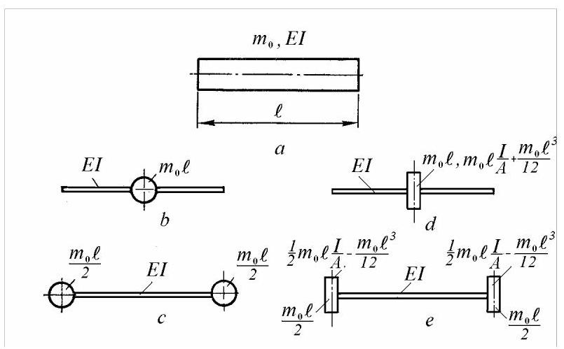
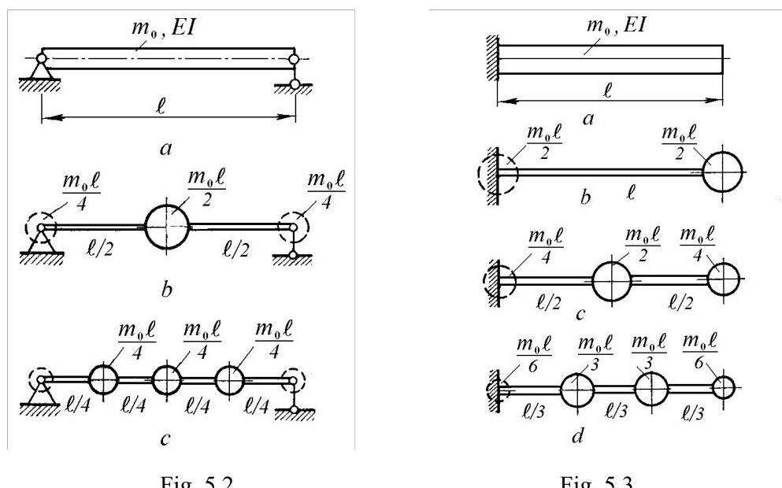
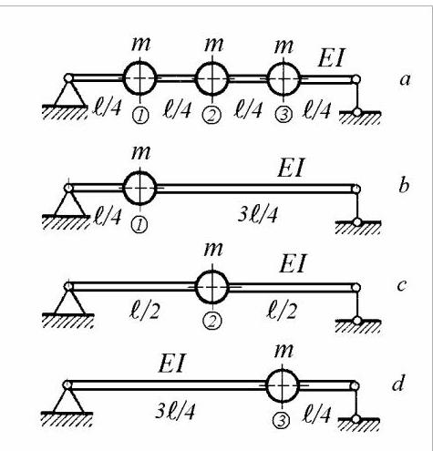
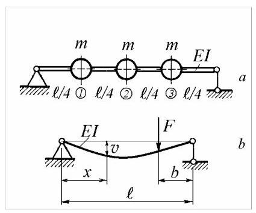

第22篇
5. 多自由度系统
上一章将两自由度系统视为多自由度系统(multi-degree-of-freedom systems)的最简情形并予以介绍。若系统在任何时刻的构形均可由\(n\)个独立坐标描述，则该系统具有\(n\)个自由度。通常，在构形空间中，坐标为直线平移和转动，但也可使用速度和加速度。
具有有限自由度的系统称为离散系统(discrete systems)。工程实践中，通常用有限个坐标来描述连续系统的振动。离散系统的每个元素本身仍是连续系统，但其最低阶固有频率远高于理想化离散系统的相应频率。
最简单的方法是采用集中参数系统(lumped parameter systems)，由集中质量或圆盘、弹簧和阻尼器组成。其动态特性由标量定义。各元素可用刚度矩阵和阻尼矩阵描述，这些矩阵将端部力与元素两端的位移和速度联系起来。
另一种离散化技术是有限元法(finite element method)，可视为瑞利-里兹法(Rayleigh-Ritz method)。它通过有限个形函数(shape functions)与待定系数的乘积级数，近似求解无已知封闭解的微分特征值问题。在有限元法中，形函数为局部低次多项式，系数为节点位移，其取值使系统的瑞利商(Rayleigh quotient)取驻值。对每种元素类型定义单元矩阵，可组装成整体质量、刚度和阻尼矩阵。
获得整体矩阵后，可写出运动方程。假设同步谐波解，方程转化为齐次代数方程组，等价于代数特征值问题。求解该特征值问题可得固有频率及相应的模态振型(mode shapes)。也可通过最小化瑞利商求得固有频率。
离散系统的动态响应可用联立常微分方程描述。若选取合适的坐标——主坐标或模态坐标(principal or modal coordinates)，方程可解耦并独立求解。模态坐标是实际位移的线性组合。反之，运动也可视为由各模态坐标定义的自然模态振动的叠加。自然模态下的振动在所有系统坐标上同步且呈谐波形式。
有限自由度系统会同时以若干自然模态振动，其数量与自由度相同。只有在特定初始条件或外力组合下，系统才会仅以单一模态振动。然而，在阻尼系统中，自由振动主要由少数低阶模态主导，有时仅由最低阶模态主导；而受迫振动可表示为在关注频率范围内发生共振的模态之和，再加上因频率低于或高于工作范围而产生的残余项。
本章讨论的低阶离散系统与下一章讨论的高阶离散系统之间并无本质区别，只是后者求解特征值问题需要更高效的计算方法。
5.1 集中质量系统Lumped Mass Systems
由杆、轴或梁等一维构件组成的系统，可用由集中质量通过无质量弹性元件连接的简化系统建模。构件的分布质量被集中到任意选定的离散点上，而不考虑沿构件的振幅变化。
5.1.1 带集中质量的梁
带集中质量的梁可仅具有线横向位移的点质量，或同时具有平移和转动自由度的刚性圆盘。
5.1.1.1 线位移
图5.1给出了表示均匀梁单元的两种常用方式。Duncan模型(图5.1，\(b\))将所有质量集中于重心。Rayleigh模型(图5.1，\(c\))将每段质量的一半置于两端。图中\({m}_{0} = {\rho A}\)为单位长度质量，其中\(\rho\)为质量密度，\(A\)为横截面积。

图5.1
比较两种模型可见，Duncan模型忽略了绕中点的转动惯量，而Rayleigh模型则考虑了\(2\frac{{m}_{0}\ell }{2}{\left( \frac{\ell }{2}\right) }^{2} \neq 0\)。因此，采用Duncan模型集中质量通常得到较高的固有频率，而Rayleigh模型得到较低的固有频率。随着单元数量增加，两种模型计算出的频率差异减小。
对于阶梯梁，Rayleigh模型还具有优势:当梁的弯曲刚度\({EI}\)在单元端部发生变化时，该集中质量模型可保持各段截面恒定。
通过两个示例可以说明使用瑞利(Rayleigh)模型计算所得固有频率值之间的差异。
当图5.2中的简支梁\(a\)被划分为两段时(图5.2, b)，其固有频率与具有分布质量的梁的真实值(6.14)之比为\({\omega }_{1}/{\omega }_{10} = {0.995}\)。当梁被划分为四段时(图5.2,\(c\))，所得三自由度系统的固有频率分别为\({\omega }_{1}/{\omega }_{10} = {0.98},{\omega }_{2}/{\omega }_{20} = {0.995}\)和\({\omega }_{3}/{\omega }_{30} = {0.995}\)。
对于图5.3所示的悬臂梁，\(a\)该近似值偏低。对于单段模型(图5.3，b)，固有频率与真实值(6.16)之比为\({\omega }_{1}/{\omega }_{10} = {0.7}\)。当梁被分为两段时(图5.3，\(c\))，第一阶固有频率之比为\({\omega }_{1}/{\omega }_{10} = {0.9}\)。当梁被分为三段时(图5.2，d)，第一阶固有频率之比为\({\omega }_{1}/{\omega }_{10} = {0.95}\)

5.1.1.2 线位移与角位移
图5.1\(d\)展示了Duncan模型(邓肯模型)的扩展，其中梁单元的质量与质量惯性矩集中于中点。
对于均质梁单元，总质量为
\[
m = {\rho A}\ell = {m}_{0}\ell , \tag{5.1}
\]
总质量惯性矩为
\[
J = \frac{{m}_{0}{\ell }^{3}}{12} + {m}_{0}\ell \frac{I}{A} = \frac{{\rho A}{\ell }^{3}}{12} + \rho \ell I \tag{5.2}
\]
其中\(I\)为截面二次矩(cross-section second moment of area)。
对于直径为\(d\)、长度为\(\ell\)的圆柱形梁单元
\[
J = \frac{{m}_{0}\ell }{12}\left( {\frac{3{d}^{2}}{4} + {\ell }^{2}}\right) . \tag{5.3}
\]
总质量惯性矩由两部分组成。第一部分\(m{\ell }^{2}/{12}\)源于单元质量沿梁长度方向分布于中性轴层面。第二部分，即“转动惯量”\(\rho \ell I\)，源于梁质量同时分布于远离梁中性轴的位置。该部分仅由旋转激发，而非由平移激发。
在瑞利模型(Rayleigh's model)的扩展中(图5.1，e)，一半质量和一个负的质量惯性矩被集中到左右两端。通过这种分布，质量和对中点的总质量惯性矩的守恒均得到满足。可利用平行轴的惠更斯-施泰纳定理(Huygens-Steiner theorem)计算后者以验证这一点。
\[
J = 2\left( {\frac{{m}_{0}\ell }{2}\frac{{\ell }^{2}}{4} - \frac{{m}_{0}{\ell }^{3}}{12}}\right) = \frac{{m}_{0}{\ell }^{3}}{12}.
\]
上述区分在有限元分析(finite element analysis)中至关重要。常用的两种对角集中质量矩阵(diagonal lumped-mass matrices)包括:用于平移惯性(translational inertia)的单元质量矩阵(element mass matrix)
\[
\left\lbrack {m}_{t}^{e}\right\rbrack = {m}_{0}\ell \left\lbrack \begin{matrix} 1/2 & 0 & 0 & 0 \\ 0 & - {\ell }^{2}/{12} & 0 & 0 \\ 0 & 0 & 1/2 & 0 \\ 0 & 0 & 0 & - {\ell }^{2}/{12} \end{matrix}\right\rbrack \tag{5.4}
\]
以及一个考虑转动惯量(rotatory inertia)的单元质量矩阵
\[
\left\lbrack {m}_{r}^{e}\right\rbrack = {m}_{0}\ell \left\lbrack \begin{matrix} 0 & 0 & 0 & 0 \\ 0 & {i}^{2} & 0 & 0 \\ 0 & 0 & 0 & 0 \\ 0 & 0 & 0 & {i}^{2} \end{matrix}\right\rbrack , \tag{5.5}
\]
其中\(i = \sqrt{I/A}\)。
5.1.1.3 柔度系数(Flexibility Coefficients)
如第4.3节所示，对于具有集中质量的弯曲系统，使用柔度系数(flexibility coefficients)而非刚度(stiffnesses)来书写运动方程更为简便。
若将集中质量的线位移作为定义系统运动的坐标，则质量位移向量\(\{ y\}\)与作用于集中质量的力向量\(\{ f\}\)通过柔度矩阵\(\left\lbrack \delta \right\rbrack\)按方程(4.78)关联
\[
\{ y\} = \left\lbrack \delta \right\rbrack \{ f\} . \tag{5.6}
\]
自由振动的运动方程(4.82)可写为
\[
\left\lbrack \delta \right\rbrack \left\lbrack m\right\rbrack \{ \ddot{y}\} + \{ y\} = \{ 0\} . \tag{5.7}
\]
对应的特征值问题(4.85)为
\[
\left( {\left\lbrack \delta \right\rbrack \left\lbrack m\right\rbrack - \frac{1}{{\omega }^{2}}\left\lbrack I\right\rbrack }\right) \{ a\} = \{ 0\} . \tag{5.8}
\]
存在非平凡解的条件给出频率方程
\[
\det \left( {\left\lbrack \delta \right\rbrack \left\lbrack m\right\rbrack - \frac{1}{{\omega }^{2}}\left\lbrack I\right\rbrack }\right) = 0 \tag{5.9}
\]
其解即为系统的固有频率\({\omega }_{r}\)
模态形状由满足齐次线性方程组的模态向量\(\{ a{\} }_{r}\)定义
\[
\left( {\left\lbrack \delta \right\rbrack \left\lbrack m\right\rbrack - \frac{1}{{\omega }_{r}^{2}}\left\lbrack I\right\rbrack }\right) \{ a{\} }_{r} = \{ 0\} . \tag{5.10}
\]
例5.1
计算图5.4所示三质量梁的横向振动固有频率，\(a\)，其中\({EI} =\)为常数
解:参照图5.4，\(b\)，距右端\(b\)处作用集中载荷\(F\)时，任意点\(x\)的挠度可由方程确定
\[
v\left( x\right) = \frac{Fbx}{{6EI}\ell }\left( {{\ell }^{2} - {x}^{2} - {b}^{2}}\right) .
\]
柔度系数为
\[
{\delta }_{ij} = \frac{{b}_{j}{x}_{i}}{{6EI}\ell }\left( {{\ell }^{2} - {x}_{i}^{2} - {b}_{j}^{2}}\right) .
\]
由于\({x}_{1} = {b}_{3} = \ell /4,{x}_{2} = {b}_{2} = \ell /2,{x}_{3} = {b}_{1} = 3\ell /4\)，柔度矩阵为
\[
\left\lbrack \delta \right\rbrack = \frac{{\ell }^{3}}{768EI}\left\lbrack \begin{matrix} 9 & {11} & 7 \\ {11} & {16} & {11} \\ 7 & {11} & 9 \end{matrix}\right\rbrack \tag{5.11}
\]
方程(5.8)可写为
\[
\left\lbrack \begin{matrix} 9 & {11} & 7 \\ {11} & {16} & {11} \\ 7 & {11} & 9 \end{matrix}\right\rbrack \left\{ \begin{array}{l} {a}_{1} \\ {a}_{2} \\ {a}_{3} \end{array}\right\} = \lambda \left\{ \begin{array}{l} {a}_{1} \\ {a}_{2} \\ {a}_{3} \end{array}\right\}
\]
其中
\[
\lambda = {768EI}/m{\ell }^{3}{\omega }^{2}.
\]

图5.5

图5.4
频率方程为
\[
{\lambda }^{3} - {34}{\lambda }^{2} + {78\lambda } - {28} = 0
\]
带根
\[
{\lambda }_{1} = {31.5563},\;{\lambda }_{2} = 2,\;{\lambda }_{3} = {0.4436}.
\]
固有频率(natural frequencies)为
\[
{\omega }_{1} = {4.933}\sqrt{{EI}/m{\ell }^{3}},{\omega }_{2} = {19.596}\sqrt{{EI}/m{\ell }^{3}},{\omega }_{3} = {41.606}\sqrt{{EI}/m{\ell }^{3}}.
\]
模态向量(modal vectors)为
\[
\{ a{\} }_{1} = \left\{ \begin{matrix} 1 \\ {1.4142} \\ 1 \end{matrix}\right\} ,\{ a{\} }_{2} = \left\{ \begin{matrix} 1 \\ 0 \\ - 1 \end{matrix}\right\} ,\{ a{\} }_{3} = \left\{ \begin{matrix} 1 \\ - {1.4142} \\ 1 \end{matrix}\right\} .
\]
对许多振动系统而言，第二阶及以上模态的固有频率往往远高于基模的固有频率。这一事实使得可用简单公式估算基频。
若
\[
{\alpha }_{0}{\lambda }^{n} + {\alpha }_{1}{\lambda }^{n - 1} + \ldots + {\alpha }_{n - 1}\lambda + {\alpha }_{n} = 0
\]
为一代数方程，则其根之和为
\[
\mathop{\sum }\limits_{{i = 1}}^{n}{\lambda }_{i} = - \frac{{\alpha }_{1}}{{\alpha }_{0}}.
\]
考虑频率方程(5.9)，可写出
\[
\mathop{\sum }\limits_{{i = 1}}^{n}\frac{1}{{\omega }_{i}^{2}} = - \frac{{\alpha }_{1}}{{\alpha }_{0}} = \mathop{\sum }\limits_{{i = 1}}^{n}{\delta }_{ii}{m}_{i} = \mathop{\sum }\limits_{{i = 1}}^{n}\frac{1}{{\omega }_{ii}^{2}},
\]
其中\({\omega }_{ii}^{2}\)为仅含质量\({m}_{i}\)的“孤立”系统的固有频率平方。该频率基于孤立单质量系统的精确挠度曲线计算，其构型与分析系统相同，但已去除其余质量。
由于\({\omega }_{1} < {\omega }_{2} < \ldots < {\omega }_{n}\)，在近似确定基频时可略去第一求和项中除第一项外的所有项
\[
\frac{1}{{\omega }_{1}^{2}} \cong \mathop{\sum }\limits_{{i = 1}}^{n}\frac{1}{{\omega }_{i}^{2}} = \mathop{\sum }\limits_{{i = 1}}^{n}\frac{1}{{\omega }_{ii}^{2}}
\]
或
\[
\frac{1}{{\omega }_{1}^{2}} \cong \frac{1}{{\omega }_{11}^{2}} + \frac{1}{{\omega }_{22}^{2}} + \frac{1}{{\omega }_{33}^{2}} + \ldots \tag{5.12}
\]
于是，基频平方的倒数可通过将各孤立频率平方的倒数相加得到。式(5.12)称为邓克利公式(Dunkerley's formula)。该公式由S. Dunkerley于1895年通过实验发现并发表，后由R. V. Southwell于1921年从理论上加以证明。
它无需求解相关特征值问题即可估算系统的基频。该公式仅适用于接地系统，即不能用于自由-自由系统。一般而言，它给出的基频估计值偏低。
对于图5.3所示悬臂梁，\(a\)基频(6.16)的真值为\({\omega }_{10} = {3.52}\sqrt{{EI}/m{\ell }^{3}}\)。若模型仅取一段(图\({5.3}, b)\))，最低固有频率为\({\omega }_{1} = {2.44}\sqrt{{EI}/m{\ell }^{3}}\)，比真值低\({30.7}\%\)。若将梁分为两段(图5.3, c)，第一阶固有频率为\({\omega }_{1} = {3.098}\sqrt{{EI}/m{\ell }^{3}}\)，比真值低\({12}\%\)。若分为三段(图5.2, d)，第一阶固有频率为\({\omega }_{1} = {3.286}\sqrt{{EI}/m{\ell }^{3}}\)，低\({7.12}\%\)；若分为四段，则比真值低4.5%。
例5.2
用邓克利公式计算例5.1中三质量梁(图5.5, a)的横向振动基频。
解:由柔度矩阵(5.11)得
\[
{\delta }_{11} = {\delta }_{33} = \frac{9{\ell }^{3}}{768EI},\;{\delta }_{22} = \frac{{16}{\ell }^{3}}{768EI}.
\]
对于仅含孤立质量的单自由度系统(图5.5, b,\(c, d)\))，其固有频率平方分别为
\[
{\omega }_{11}^{2} = \frac{1}{m{\delta }_{11}} = \frac{768EI}{{9m}{\ell }^{3}},
\]
\[
{\omega }_{22}^{2} = \frac{1}{m{\delta }_{22}} = \frac{768EI}{{16m}{\ell }^{3}},
\]
\[
{\omega }_{33}^{2} = \frac{1}{m{\delta }_{33}} = \frac{768EI}{{9m}{\ell }^{3}},
\]
于是邓克利公式(5.12)给出
\[
\frac{1}{{\omega }_{1}^{2}} \cong \frac{1}{{\omega }_{11}^{2}} + \frac{1}{{\omega }_{22}^{2}} + \frac{1}{{\omega }_{33}^{2}} = \frac{{9m}{\ell }^{3}}{768EI} + \frac{{16m}{\ell }^{3}}{768EI} + \frac{{9m}{\ell }^{3}}{768EI} = \frac{{34m}{\ell }^{3}}{768EI}.
\]
估计的基频固有频率为
\[
{\omega }_{1} \cong {4.7527}\sqrt{{EI}/m{\ell }^{3}},
\]
比示例5.1中计算的真实值低3.6%。
当梁用集中质量模型表示时，由一系列集中质量\({m}_{i}\left( {i = 1,\ldots , n}\right)\)在横坐标\({x}_{i}\)处连接于无质量梁上，瑞利公式(2.19)变为
\[
{\omega }_{1}^{2} = \frac{\int {EI}{\left( {\partial }^{2}v/\partial {x}^{2}\right) }^{2}{dx}}{\mathop{\sum }\limits_{{i = 1}}^{n}{m}_{i}{v}_{i}^{2}}, \tag{5.13}
\]
其中\({v}_{i} = v\left( {x}_{i}\right)\)为质量位置处的静挠度。
若应变能由相应集中重量\({m}_{i}g\)所做的功确定，则\({U}_{\max } = \frac{1}{2}\mathop{\sum }\limits_{{i = 1}}^{n}{m}_{i}g \cdot {v}_{i}\)，于是瑞利公式(5.13)变为
\[
{\omega }_{1}^{2} = \frac{g\mathop{\sum }\limits_{{i = 1}}^{n}{m}_{i}{v}_{i}}{\mathop{\sum }\limits_{{i = 1}}^{n}{m}_{i}{v}_{i}^{2}}. \tag{5.14}
\]
其中\(g\)为重力加速度。
如2.1.5节所述，若假设振动系统的真实挠度曲线，则瑞利公式求得的基频即为正确频率；对任何其他曲线，该方法确定的频率将高于真实频率。
若需更高精度，可用动态荷载代替静重以获得更接近动态挠度曲线的近似。由于动态荷载为\({m}_{i}{\omega }^{2}{v}_{i}\)，与挠度成正比，故可用修正后的重量\({m}_{1}g,{m}_{2}g\frac{{v}_{2}}{{v}_{1}},{m}_{3}g\frac{{v}_{3}}{{v}_{1}}\)重新计算挠度。
示例5.3
利用瑞利公式(5.14)计算示例5.1中三质量梁(图5.4，a)的横向振动基频。
解:利用柔度系数并应用叠加原理，任一质量的位移可表示为相应位置柔度系数与对应重量乘积之和。
方程(5.6)可写成
\[
\left\{ \begin{array}{l} {v}_{1} \\ {v}_{2} \\ {v}_{3} \end{array}\right\} = \left\lbrack \delta \right\rbrack \left\{ \begin{array}{l} {mg} \\ {mg} \\ {mg} \end{array}\right\} = {mg}\left\lbrack \delta \right\rbrack \left\{ \begin{array}{l} 1 \\ 1 \\ 1 \end{array}\right\}
\]
由此可得
\[
{v}_{1} = {mg}\left( {{\delta }_{11} + {\delta }_{12} + {\delta }_{13}}\right) = \frac{{27}{\ell }^{3}}{768EI}{mg},
\]
\[
{v}_{2} = {mg}\left( {{\delta }_{21} + {\delta }_{22} + {\delta }_{23}}\right) = \frac{{38}{\ell }^{3}}{768EI}{mg},
\]
\[
{v}_{3} = {v}_{1}\text{.}
\]
Substitution in (5.14) yields
代入(5.14)得
\[
{\omega }_{1}^{2} = \frac{768EI}{m{\ell }^{3}}\frac{{27} + {38} + {27}}{{27}^{2} + {38}^{2} + {27}^{2}} = \frac{768EI}{{9m}{\ell }^{3}}\frac{92}{2902} = \frac{768}{31.54348}\frac{EI}{m{\ell }^{3}}
\]
或
\[
{\omega }_{1} = {4.9343}\sqrt{{EI}/m{\ell }^{3}},
\]
仅比示例5.1计算的真值高0.02%。
若\(m = {m}_{0}\ell /4\)，则图5.4中的系统\(a\)与图5.2中的梁\(c\)相同。将该值代入上式得
\[
{\omega }_{1} = {4.9343} \cdot 2\sqrt{\frac{EI}{{m}_{0}{\ell }^{4}}} = \frac{9.8686}{{\ell }^{2}}\sqrt{\frac{EI}{{m}_{0}}},
\]
低于连续梁所得真值(6.14)
\[
{\omega }_{\text{true }} = \frac{{\pi }^{2}}{{\ell }^{2}}\sqrt{\frac{EI}{{m}_{0}}} = \frac{9.8696}{{\ell }^{2}}\sqrt{\frac{EI}{{m}_{0}}},
\]
由于集中质量过程中总质量未守恒。